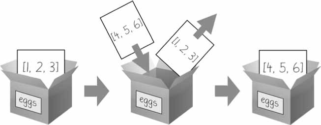
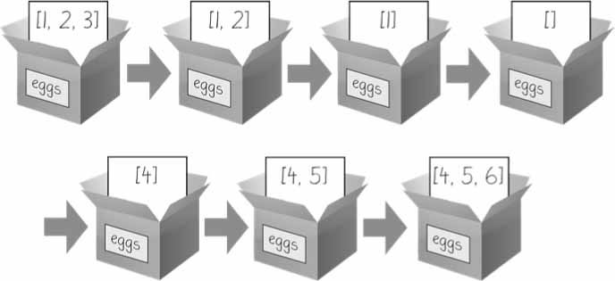
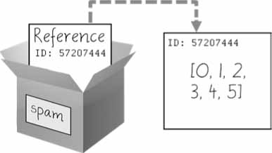
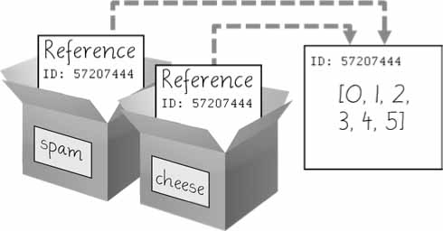
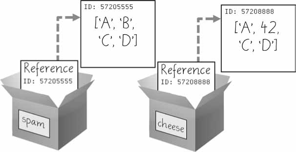

Métodos#
Um método é a mesma coisa que uma função, exceto que é “chamado” por um valor.
Por exemplo, se um valor de lista fosse armazenado em spam , você chamaria o método de lista index() nessa lista da seguinte forma:
spam.index('hello')
A parte do método vem depois do valor, separada por um ponto.
Cada tipo de dados possui seu próprio conjunto de métodos.
O tipo de dados lista, por exemplo, possui vários métodos úteis para localizar, adicionar, remover e manipular valores em uma lista.
Os valores da lista têm um método index() que pode receber um valor e, se esse valor existir na lista, o índice do valor será retornado.
Se o valor não estiver na lista, o Python produzirá um erro ValueError .
spam = ['hello', 'hi', 'howdy', 'heyas']
spam.index('hello')
0
spam.index('howdy')
2
Quando há duplicatas do valor na lista, o índice de sua primeira aparição é retornado.
spam = ['Zophie', 'Pooka', 'Fat-tail', 'Pooka']
spam.index('Pooka')
1
Adicionando valores a listas com os métodos append() e insert()
Para adicionar novos valores a uma lista, use os métodos append() e insert() .
spam = ['gato', 'cachorro', 'morcego']
spam.append('alce')
spam
['gato', 'cachorro', 'morcego', 'alce']
spam = ['gato', 'cachorro', 'morcego']
spam.insert(1, 'galinha' )
spam
['gato', 'galinha', 'cachorro', 'morcego']
Os métodos append() e insert() são métodos de lista e podem ser chamados apenas em valores de lista, não em outros valores, como strings ou inteiros
bacon = 42
bacon.insert(1, 'world')
---------------------------------------------------------------------------
AttributeError Traceback (most recent call last)
Cell In[7], line 2
1 bacon = 42
----> 2 bacon.insert(1, 'world')
AttributeError: 'int' object has no attribute 'insert'
O método remove() recebe o valor a ser removido da lista em que é chamado.
spam = ['gato', 'morcego', 'rato', 'elefante']
spam.remove('morcego')
spam
['gato', 'rato', 'elefante']
Classificando os valores em uma lista com o método sort() Listas de valores numéricos ou listas de strings podem ser classificadas com o método sort() .
spam = [2, 5, 3.14, 1, -7]
spam.sort()
spam
[-7, 1, 2, 3.14, 5]
spam = ['ants', 'cats', 'dogs', 'badgers', 'elephants']
spam.sort()
spam
['ants', 'badgers', 'cats', 'dogs', 'elephants']
spam.sort(reverse=True)
spam
['elephants', 'dogs', 'cats', 'badgers', 'ants']
você não pode classificar listas que contenham valores numéricos e valores de string, pois o Python não sabe como comparar esses valores.
spam = [1, 3, 2, 4, 'Alice', 'Bob']
spam.sort()
---------------------------------------------------------------------------
TypeError Traceback (most recent call last)
Cell In[12], line 2
1 spam = [1, 3, 2, 4, 'Alice', 'Bob']
----> 2 spam.sort()
TypeError: '<' not supported between instances of 'str' and 'int'
spam = ['Alice', 'ants', 'Bob', 'badgers', 'Carol', 'cats']
spam.sort()
spam
['Alice', 'Bob', 'Carol', 'ants', 'badgers', 'cats']
spam = ['a', 'z', 'A', 'Z']
spam.sort(key=str.lower)
spam
['a', 'A', 'z', 'Z']
spam = ['cat', 'dog', 'moose']
spam.reverse()
spam
['moose', 'dog', 'cat']
import random
messages = ['It is certain',
'It is decidedly so',
'Yes definitely',
'Reply hazy try again',
'Ask again later',
'Concentrate and ask again',
'My reply is no',
'Outlook not so good',
'Very doubtful']
print(messages[random.randint(0, len(messages) - 1)])
Reply hazy try again
Tipos de dados mutáveis e imutáveis#
name = 'Zophie a cat'
name[7] = 'the'
---------------------------------------------------------------------------
TypeError Traceback (most recent call last)
Cell In[17], line 2
1 name = 'Zophie a cat'
----> 2 name[7] = 'the'
TypeError: 'str' object does not support item assignment
name = 'Zophie a cat'
newName = name[0:7] + 'the' + name[8:12]
name
'Zophie a cat'
newName
'Zophie the cat'
eggs = [1, 2, 3]
eggs = [4, 5, 6]
eggs

eggs = [1, 2, 3]
del eggs[2]
del eggs[1]
del eggs[0]
eggs.append(4)
eggs.append(5)
eggs.append(6)
eggs

O tipo de dados tupla#
O tipo de dados tupla é quase idêntico ao tipo de dados lista, exceto de duas maneiras. Primeiro, as tuplas são digitadas com parênteses, ( e ) , em vez de colchetes, [ e ] . Mas a principal diferença entre as tuplas e as listas é que as tuplas, assim como as strings, são imutáveis. As tuplas não podem ter seus valores modificados, acrescentados ou removidos.
eggs = ('hello', 42, 0.5)
eggs[0]
'hello'
eggs[1:3]
(42, 0.5)
len(eggs)
3
eggs[1] = 99
---------------------------------------------------------------------------
TypeError Traceback (most recent call last)
Cell In[23], line 1
----> 1 eggs[1] = 99
TypeError: 'tuple' object does not support item assignment
Se você precisar de uma sequência ordenada de valores que nunca mude, use uma tupla. Um segundo benefício de usar tuplas em vez de listas é que, por serem imutáveis e seu conteúdo não mudar, o Python pode implementar algumas otimizações que tornam o código que usa tuplas um pouco mais rápido do que o código que usa listas.
Uma observação a ser feita no uso de uma tupla é que se ela tiver um único item, é necessário colocar uma vírgula depois dele, pois caso contrário, o objeto que vamos obter é uma string, porque o valor do item é do tipo string.
objeto_string = ('tesoura')
objeto_tupla = ('tesoura',)
print(type(objeto_string)) # class 'str'
print(type(objeto_tupla)) # class 'tuple'
<class 'str'>
<class 'tuple'>
O fato da tupla ser imutável faz com que os seus elementos não possam ser alterados depois dela já criada. Vamos usar a tupla vogais para mostrar um exemplo desse tipo. O Código 14 exibirá o erro TypeError: ‘tuple’ object does not support item assignment.
vogais = (‘a’, ‘e’, ‘i’, ‘o’, ‘u’)
vogais[1] = ‘E’ Código 14. Erro ao alterar valor da tupla Veja que não é possível fazer alteração nas tuplas. Diferentemente do que acontece com as listas, não podemos trocar os elementos de um objeto do tipo tupla, pois se trata de uma sequência imutável.
Para fixar esse conceito, lembre-se que as tuplas e as strings são sequências imutáveis. Já as listas são sequências mutáveis. Isso está de acordo com a documentação oficial do Python. As tuplas devem ser usadas em situações em que não haverá necessidade de adicionar, remover ou alterar elementos de um grupo de itens. Exemplos bons seriam os meses do ano, os dias da semana, as estações do ano etc. Nesses casos, não haverá mudança nesses itens (pelo menos isso é muito improvável).
Convertendo tipos com as funções list() e tuple()#
eggs = ['cat', 'dog', 5]
tuple(eggs)
('cat', 'dog', 5)
eggs[1] = 99
eggs
['cat', 99, 5]
list[('cat', '10', 'dog')]
list['cat', '10', 'dog']
Referências#
var1 = 42
var2 = var1
var1 = 100
var2
42
var1
100
Lembre-se de que variáveis são como caixas que contêm valores. As figuras anteriores deste capítulo mostram que as listas em caixas não são exatamente precisas, porque as variáveis de lista na verdade não contêm listas — elas contêm referências a listas. (Essas referências terão números de ID que o Python usa internamente, mas você pode ignorá-los.)

spam = [0, 1, 2, 3, 4, 5]
cheese = spam # The reference is being copied, not the list.
cheese[1] = 'Hello!' # This changes the list value.
spam
[0, 'Hello!', 2, 3, 4, 5]
cheese # The cheese variable refers to the same list.
[0, 'Hello!', 2, 3, 4, 5]

id('Howdy')
1992528087152
var1 = 'Hello'
id(var1)
1992528090480
var1 += ' world!' # A new string is made from 'Hello' and ' world!'.
id(var1) # now refers to a completely different string.
1992527874992
list1 = ['cat', 'dog'] # This creates a new list.
id(list1)
1992528185408
list1.append('moose') # append() modifies the list "in place".
id(list1) # still refers to the same list as before.
1992528185408
list1 = ['bat', 'rat', 'cow'] # This creates a new list, which has a new identity.
id(list1)
1992513160320
Passando Referências#
As referências são particularmente importantes para entender como os argumentos são passados para as funções. Quando uma função é chamada, os valores dos argumentos são copiados para as variáveis dos parâmetros. Para listas (e dicionários), isso significa que uma cópia da referência é usada para o parâmetro.
def passRef(someParameter):
someParameter.append('Hello')
spam = [1, 2, 3]
id(spam)
1992513339904
passRef(spam)
print(spam)
[1, 2, 3, 'Hello']
id(spam)
1992513339904
As funções copy() e deepcopy() do módulo copy#
Embora passar referências seja muitas vezes a maneira mais prática de lidar com listas e dicionários, se a função modificar a lista ou dicionário que é passado, você pode não querer essas alterações na lista original ou no valor do dicionário. Para isso, Python fornece um módulo chamado copy que fornece as funções copy() e deepcopy() . O primeiro deles, copy.copy() , pode ser usado para fazer uma cópia duplicada de um valor mutável como uma lista ou dicionário, não apenas uma cópia de uma referência.
import copy
spam = ['A', 'B', 'C', 'D']
id(spam)
1992513285760
cheese = copy.copy(spam)
id(cheese) # cheese is a different list with different identity.
ind1 = id(cheese)
cheese[1] = 42
print(ind1)
1992527873024
cheese
['A', 42, 'C', 'D']
spam
['A', 'B', 'C', 'D']
ind2 = id(spam)
print(ind2)
1992513285760

Se a lista que você precisa copiar contiver listas, use a função copy.deepcopy() em vez de copy.copy() . A função deepcopy() também copiará essas listas internas.
dict1 = {
'linguagem': 'Python',
'criador': 'Guido van Rossum'
}
dict2 = dict1.copy()
dict2['linguagem'] = 'Javascript'
print('dict1: ', dict1, 'id dict1: ', id(dict1))
print('dict2: ', dict2, 'id dict2: ', id(dict2))
dict1: {'linguagem': 'Python', 'criador': 'Guido van Rossum'} id dict1: 1992527757376
dict2: {'linguagem': 'Javascript', 'criador': 'Guido van Rossum'} id dict2: 1992513288768
dict1 = {
'linguagem': 'Python',
'criador': 'Guido van Rossum',
'IDE': ['VScode', 'PyCharm']
}
dict2 = dict1.copy()
dict2['linguagem'] = 'Javascript'
dict2['IDE'][0] = 'Sublime text'
print('dict1: ', dict1)
print('id dict1: ', id(dict1))
print('dict2: ', dict2)
print('id dict2: ',id(dict2))
print('id IDE: ',id(dict1['IDE']))
print('id IDE: ',id(dict2['IDE']))
dict1: {'linguagem': 'Python', 'criador': 'Guido van Rossum', 'IDE': ['Sublime text', 'PyCharm']}
id dict1: 1992528224896
dict2: {'linguagem': 'Javascript', 'criador': 'Guido van Rossum', 'IDE': ['Sublime text', 'PyCharm']}
id dict2: 1992528224960
id IDE: 1992528122304
id IDE: 1992528122304
o método copy() copia apenas os valores imutáveis e “linka” as referências dos valores mutáveis.
import copy
dict1 = {
'linguagem': 'Python',
'criador': 'Guido van Rossum',
'IDE': ['VScode', 'PyCharm']
}
dict2 = copy.deepcopy(dict1)
dict2['linguagem'] = 'Javascript'
dict2['IDE'][0] = 'Sublime text'
print('dict1: ', dict1)
print('id dict1: ', id(dict1))
print('dict2: ', dict2)
print('id dict2: ',id(dict2))
print('id IDE: ',id(dict1['IDE']))
print('id IDE: ',id(dict2['IDE']))
dict1: {'linguagem': 'Python', 'criador': 'Guido van Rossum', 'IDE': ['VScode', 'PyCharm']}
id dict1: 1992527765824
dict2: {'linguagem': 'Javascript', 'criador': 'Guido van Rossum', 'IDE': ['Sublime text', 'PyCharm']}
id dict2: 1992528216896
id IDE: 1992528217088
id IDE: 1992528123648
from copy import deepcopy
# livros A, [B_vol1, B_vol2], C
livros_yan = [['A'], ['B_vol1', 'B_vol2'], ['D']]
livros_gil = livros_yan.copy()
livros_pedro = deepcopy(livros_yan)
print("L_01" + "=" * 20)
# ID para livros_yan (ex.: 2003186526912)
print("ID lista LIVROS YAN:", id(livros_yan))
# .copy() gera um nova ID para livros_gil (ex.: 2003186527552)
print("ID lista LIVROS GIL:", id(livros_gil))
# deepcopy gera um nova ID para livros_pedro (ex.: 2003186527296)
print("ID lista LIVROS PEDRO:", id(livros_pedro))
print("\nL_02" + "=" * 20)
# ID LIVRO [B_vol1, B_vol2] igual YAN (ex.: 2003186350400) e GIL (ex.: 2003186350400),
# POREM difere para PEDRO (ex.: 2003186526976)
print("ID LIVRO [B_vol1, B_vol2] YAN:", id(livros_yan[1]))
print("ID LIVRO [B_vol1, B_vol2] GIL:", id(livros_gil[1]))
print("ID LIVRO [B_vol1, B_vol2] PEDRO:", id(livros_pedro[1]))
# ID B_vol1 igual para YAN, GIL e também PEDRO (ex.: 2003186037296 para os tres)
print("ID B_vol1 YAN:", id(livros_yan[1][0]))
print("ID B_vol1 GIL:", id(livros_gil[1][0]))
print("ID B_vol1 PEDRO:", id(livros_pedro[1][0]))
print("\nL_03" + "=" * 20)
# remove apenas o B_vol1
livros_yan[1].remove('B_vol1')
# B_vol1 será removido de Yan e Gil, porem permanece em Pedro
# deepcopy fez seu papel de nao remover B_vol1 para Pedro
print("LIVROS YAN SEM B_vol1:", livros_yan)
print("LIVROS GIL SEM B_vol1:", livros_gil)
print("LIVROS PEDRO:", livros_pedro)
Se o deepcopy cria novos objetos (ID) na nova lista, porque ‘B_vol1’ possui a mesma ID em listas diferentes?” o ID do ‘B_vol1’ não mude porque ‘str’ já é um valor imutável, como é o mesmo objeto(‘B_vol1’), ele aponta para a mesma referencia na memoria em todas as listas…
o mesmo caso ocorre a baixo, o id das variaveis t1 e t2 são os mesmos, mas mudar uma delas nao afeta a outra porque elas sao imutaveis. Se eu deletar t1 ou modificar o valor, o id de t1 vai mudar, mas o objeto ‘teste’ vai continuar na memoria.
t1='teste'
t2='teste'
print(id(t1),id(t2),sep='\n')
t1='testeT1'
t2='teste'
print(id(t1),id(t2),sep='\n')